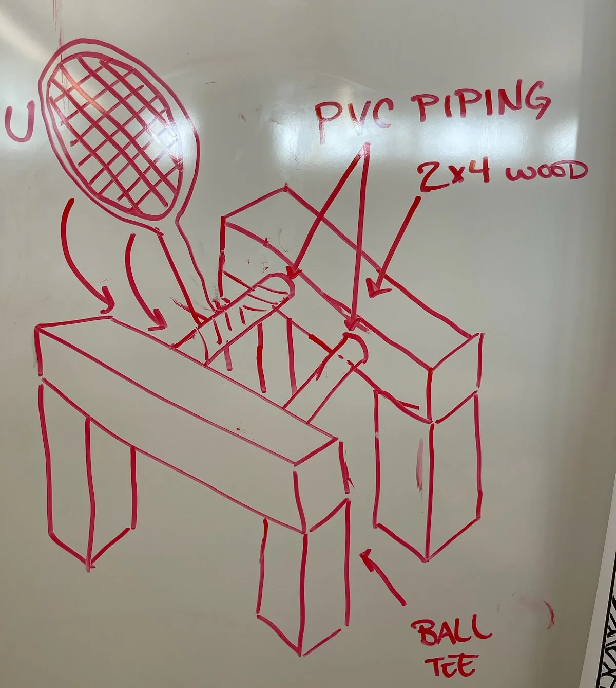
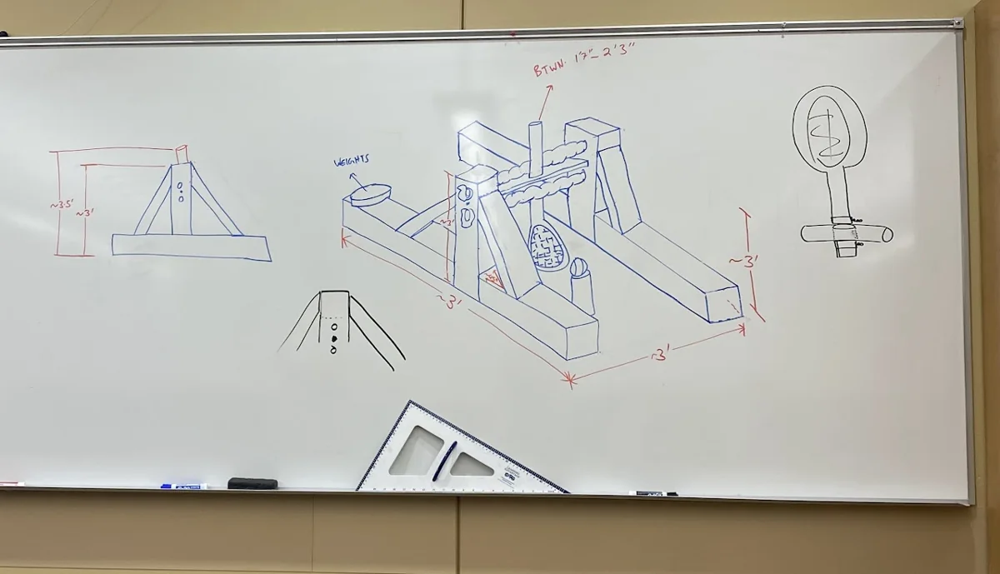

Course project · Team design, build & test
Catapult.
A team-built tennis-ball launcher that combined a wooden frame, bungee-powered mechanism, and tennis racket, followed by trials of different launch settings.
- My role
- Team design & construction
- Constraints
- $100 budget · Hand tools
- Best recorded trial
- 77 ft
- Recorded trials
- 12
- Longest recorded launch
- 77 ft
- Best condition average
- 76 ft
The challenge and my role
For an engineering graphics and design course, our team had to launch a tennis ball as far as possible with a $100 budget and mechanical power. Access to common hand tools also limited how complex the build could be.
I contributed to the team’s design and construction work. We researched options, combined ideas, planned the parts, and coordinated access to tools as we built the launcher.
Choosing an approach
We compared several launcher concepts before developing a tennis-racket mechanism powered by bungee cords. A rotating PVC assembly held the racket, which struck a ball positioned on a separate tee.
| Concept | Accuracy¹ | Consistency¹ | Distance¹ | Cost¹ | Ease of build | Average |
|---|---|---|---|---|---|---|
| Catapult | 2 | 2 | 2 | 2 | 2 | 2.0 |
| Crossbow | 3 | 3 | 3 | 1 | 1 | 2.2 |
| Slingshot | 1 | 1 | 1 | 3 | 3 | 1.8 |
| Tennis racket | 3 | 3 | 2 | 2 | 2 | 2.4 |
| Trebuchet | 1 | 2 | 3 | 1 | 1 | 1.6 |
¹ Projected ratings from the team’s early evaluation chart. The tennis-racket concept had the highest average rating.


Parts and construction
The main elements were a wooden base and uprights, diagonal supports, PVC piping and fittings, bungee cords, fasteners, a tennis racket, and a separate ball tee. The team considered alternatives for the actuator, axle supports, frame material, energy source, and fasteners before settling on a buildable combination.
| Part | Recorded planning dimension |
|---|---|
| Main uprights | 32.5 in long, using 4 × 4 lumber |
| Base rails | 36 in long, using 4 × 4 lumber |
| Angled supports | 19 in long, using 2 × 4 lumber, with 45° ends |
| Front brace | 20 in long, using 2 × 4 lumber |
| Back brace | 22.5 in long, using 4 × 4 lumber |
| Cross-shaft assembly | 33.5 in overall length in the planning sketch |
Tool availability was a practical constraint. We shared resources and adapted as construction issues came up, including difficulty making clean holes through the support pillars. The team completed the build within two weeks.


Testing the launcher
The recorded test matrix varied the number of tension revolutions and the ball position forward of center. Each of the four conditions had three measured launches.
| Tension (revolutions) | Ball position | Trial 1 | Trial 2 | Trial 3 | Mean |
|---|---|---|---|---|---|
| 1 | ≈ 16 in | 69 ft | 68 ft | 72 ft | 69.7 ft |
| 1 | ≈ 24 in | 75 ft | 77 ft | 76 ft | 76.0 ft |
| 1.5 | ≈ 16 in | 54 ft | 50 ft | 59 ft | 54.3 ft |
| 1.5 | ≈ 24 in | 61 ft | 58 ft | 58 ft | 59.0 ft |
Trial values are from the original project chart; means are calculated from the three trials in each row.
The one-revolution setting with the ball approximately 24 inches forward of center produced the longest launch and the highest average. Increasing the listed tension setting did not improve distance in these trials.
Limitations and lessons
The team’s final outline recorded several limitations: the racket could hit the tee before contacting the ball at its preferred impact location, the setup could not be increased beyond 1.5 revolutions, and repeated use introduced inconsistencies as the bungee cords’ behavior changed.
The project taught me to evaluate the complete mechanism, including contact geometry, assembly constraints, and performance over repeated use. It also showed how much a successful build depends on coordinating tools and decisions within a team.